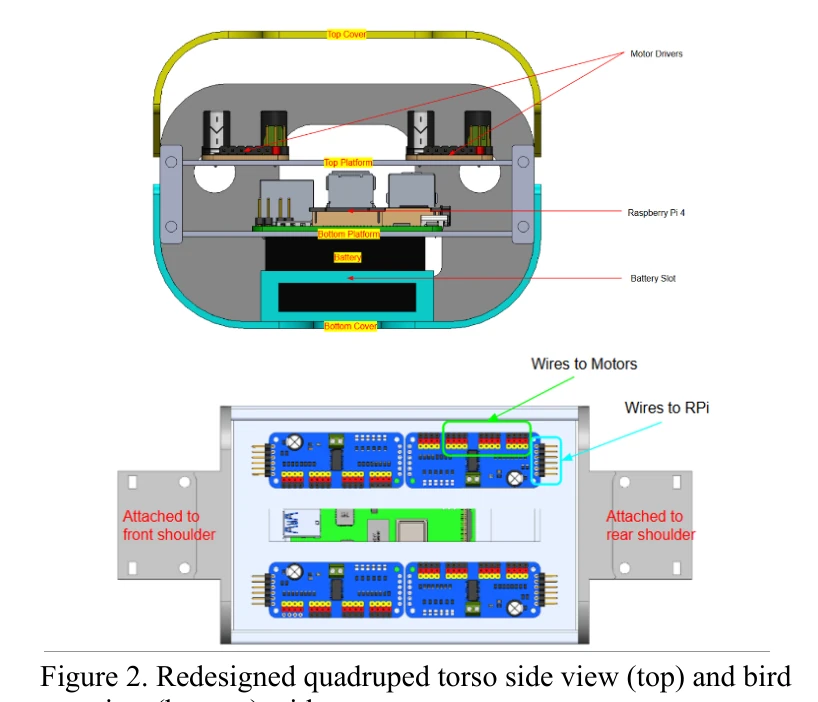
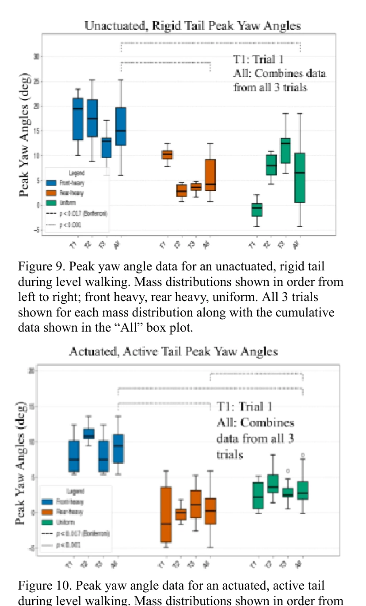
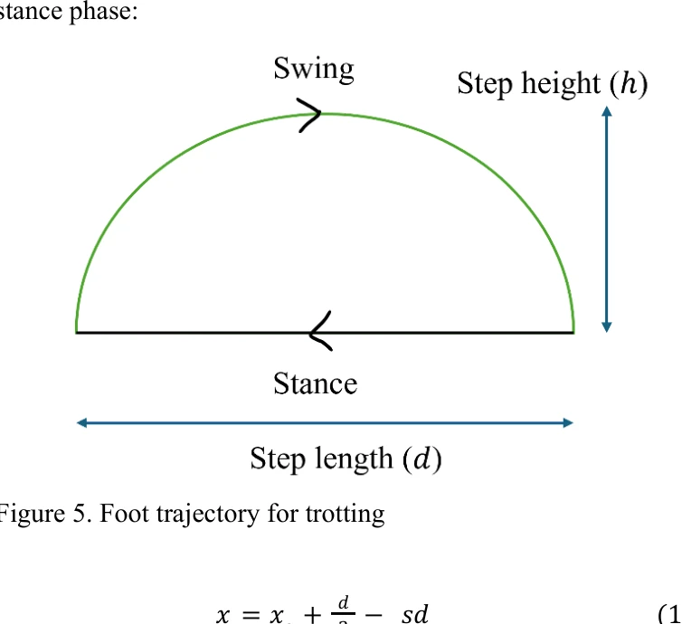

Could an articulated tail stabilize a small quadruped?
In a bio-inspired robotics team project at CMU, we adapted a 12-DoF SpotMicro robot with a modular, tendon-driven, segmented tail. The team compared active and rigid-tail conditions during straight-line walking, then measured disturbance recovery using a pendulum impact rig.
Team project: tail mechanics and PID actuation were designed and implemented by teammates. My documented responsibility centered on locomotion, simulation validation, inverse kinematics, the perturbation test apparatus, and IMU data analysis.
The pieces I built and validated
Implemented a keyframe-based diagonal-pair gait and refined the swing trajectory to improve motion and stability.
Built a Python IK solver mapping target foot positions to feasible joint angles in simulation and hardware bring-up.
Logged per-joint torques throughout the gait and checked feasibility against candidate motors.
Designed and built a pendulum-driven perturbation setup and estimated transferred momentum.
Cleaned noisy orientation signals, corrected inconsistencies, and prepared structured roll, pitch, and yaw results for statistics and plots.
A physical tail with adjustable inertia
The team’s design used linked tail segments and tendon actuation to generate a curling motion. Bearing-ball mass could be concentrated at the front, distributed evenly, or moved toward the tail tip. The walking controller used yaw feedback; the disturbance controller used roll feedback.


Figures reproduced from the team’s submitted report, “Improving Quadruped Stabilization with a Tendon-Driven Segmented Tail” (Kolluri, Ramdas, Chandra, Cao, Lapsiwala).
Lower yaw during walking; no significant small-angle roll benefit
Walking: The active tail produced lower average peak yaw across all three tested mass distributions than the inactive tail. The rear-heavy active configuration achieved the smallest peak yaw angles of the three.
Standing perturbations: For the impact tests (roll excursions below 10°), comparisons between active and inactive tails produced p-values above 0.05. The team therefore did not find a statistically significant roll-stabilization benefit in that test condition.


Important limitation: the standing configuration and the robot’s restoring torque likely limited roll excursions. Larger controlled perturbations would be needed to test whether active tail control offers a benefit in more dynamic regimes.
Code, original report, and recorded tests
Supplementary videos from the report
- Inverse kinematics in simulation ↗
- Inverse kinematics on the physical robot ↗
- Four-legged motion test ↗
- Physical walking gait ↗
Google Drive supplementary videos are linked directly from the original PDF and may require viewers to have permission.